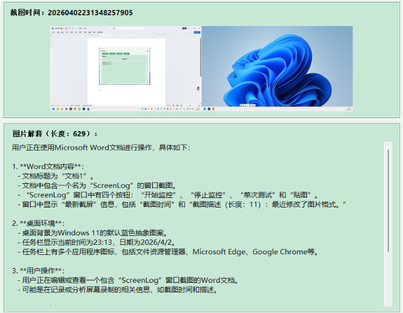
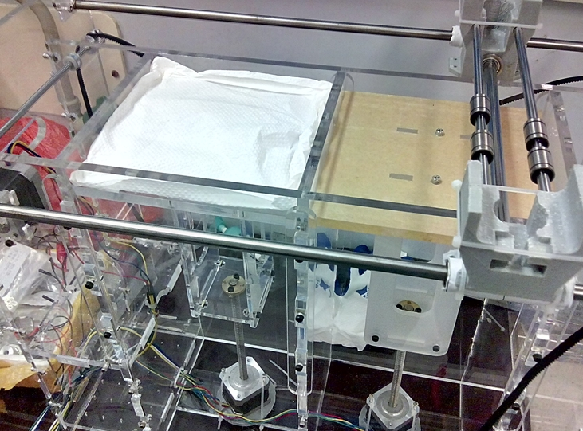

Software | see more on my github
cxpTaskDeck: AI工作调度工具。Task Deck for Parallel AI Workflows
cxpSkills: 技能和工具集合 Reusable Skills and Tools

ScreenMon: 上下文积累工具 Context Accumulation Tool
Hardware
Laser-based Rheology Detection for Concrete Mixture

Customized 3D Powder Printer based on MPC Material